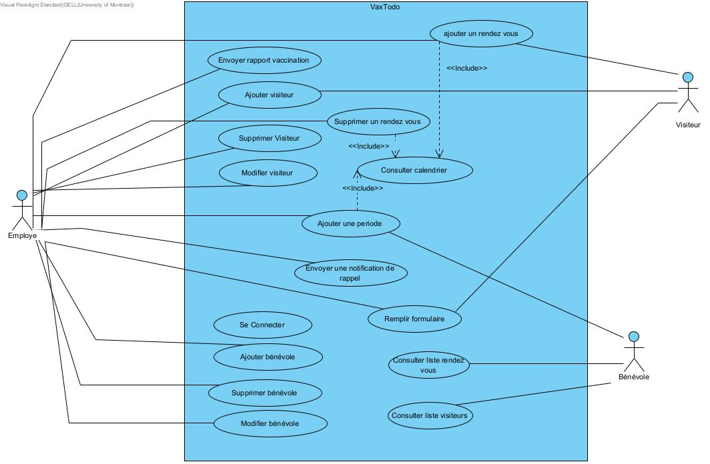

Plannification
Description brève du domaine et du problème
Présentation de l'échéancier et la distribution des taches
Présentation des hypothèses
Compréhension du domaine
Après de nombreuses rencontres et une familiarisation avec l'activité VaxTodo, nous avons préparé un glossaire rassemblant les termes et expressions clés caractérisant l'environnement.
Glossaire
- VaxTodo
- Initiative qui permet à toute personne majeure de se faire vacciner
- GoodPeople
- Organisme à but non lucratif qui a entrepris lìnitiative VaxTodo
- Bénévole
- Personnnes responsables d'accueillir les visiteurs et de les acheminer aux employés
- Employé
- Personnes responsables de faire le traitement le traitement du dossier et le choix du vaccin avec les visiteurs
- Visite planifiée
- Visite avec un visiteur qui a un rendez-vous
- Visite spontanée
- Visite avec un visiteur qui n'a pas de rendez-vous
- Questionnaire
- Formulaire qui prend les ìnformations personnelles et les informations concernant la COVID19 d'un visiteur
- Plage horaire
- Période d'une heure dans laquelle les visiteurs réservent leurs rendez-vous. Il peut y avoir un maximum de 15 rendez-vous par plage horaire
Modélisation du domaine
Cas d'utilisation
Scénarios
CU: Ajouter un rendez-vous
But: Une personne désire prendre rendez-vous pour un vaccin
Acteurs Employé (principal), Visiteur (secondaire)
Scénario principal
1. Le visiteur appelle la réception de GoodPeople
2. L’employé lui demande le but de son appel.
3. Le visiteur émet son souhait de prendre un rendez-vous pour se faire vacciner
4. L’employé accède au calendrier à partir du système et vérifie les disponibilités.
5. Le visiteur effectue un choix de date parmi celles proposées .
6. L’employé lui demande ses informations et le but de sa visite.
7. L’employé entre les informations dans le système
8. Le système valide les informations.
9. Le système confirme la réservation et affiche le numéro unique de réservation du visiteur.
10. Le système envoie par courriel le numéro de réservation au visiteur .
Scénarios alternatifs
5a. Le visiteur ne trouve aucune date qui lui convient.
5a.1. L’employé informe le visiteur qu’il n’y a aucune séance pour la période demandée
5a.2. Le scénario se termine.
8a. Le système rejette certaines informations mal entrées.
8a.1. Le logiciel demande à l’employé d’entrer les données de nouveau.
8a.2. Le scenario reprend à l’étape 7.
CU: Supprimer un rendez-vous
But: Un visiteur désire annuler un rendez-vous pris
Acteurs: Employé (principal), Visiteur (secondaire)
Préconditions: Le visiteur a pris un rendez-vous chez GoodPeople
Scénario principal
1. Le visiteur appelle la réception de GoodPeople
2. Le visiteur émet son souhait d’annuler son rendez vous.
3. L’employé demande le numéro de réservation du visiteur.
4. L’employé effectue une recherche dans le système
5. L’employé clique sur "Annuler le rendez-vous"
6. Le système valide l’annulation.
7. Le système confirme la réservation et affiche le numéro unique de réservation du client.
8. Le système envoie par courriel un message d’annulation au visiteur.
Sénarios alternatifs
4a. Le visiteur n’a pas le numéro de réservation.
4a.1. L’employé lui demande son nom et sa date de rendez-vous
4a.2. Le scénario continue à l’étape 5.
CU:Confirmer une visite
But: L’employé souhaite confirmer une visite
Acteurs: Employé (principal) ; Visiteur (secondaire)
Scénario principal
1. Le visiteur se présente à l’accueil.
2. Le bénévole consulte la version imprimée du calendrier et vérifie si le visiteur a un
rendez-vous.
3. Le bénévole dirige le visiteur vers une file d’attente de visites planifiées
4. Le bénévole appelle le visiteur et le dirige vers l’employé
5. L’employé demande les informations du visiteur
6. L’employé effectue une recherche du visiteur dans le système
7. L’employé confirme l’heure de visite dans le système
8. L’employé confirme le but de sa visite dans le système
Scénario alternatif
2a. Le visiteur n’a pas rendez-vous
2a.1. Le bénévole dirige le visiteur vers une file d’attente de visites spontanées .
2a.2. Le scénario reprend à l’étape 4.
CU: Créer un compte visiteur
But: Un visiteur souhaite prendre une première dose
Acteurs: Employé (principal), Visiteur (secondaire)
Préconditions: le but de la visite est une première dose
Scénario principal
1. L’employé confirme la visite.
2. L’employé entre les informations du visiteur dans le système .
3. L’employé clique sur ajouter
4. Le système valide les informations
5. Le système confirme la création et affiche le numéro unique du visiteur.
6. L’employé communique le numéro au visiteur.
Scénarios alternatifs
4a. Le système rejette certaines informations mal
entrées.
4a.1. Le logiciel demande à l’employé d’entrer les données de nouveau.
4a.2. Le scénario reprend à l’étape 3.
CU: Supprimer un compte visiteur
But: L'employé souhaite supprimer un compte visiteur
Acteurs: Employé (principal), Visiteur (secondaire)
Préconditions: Le visiteur a un compte visiteur à GoodPeople , le visiteur n’a pas encore été
vacciné
Scénario principal
1. L’employé entre les informations du visiteur.
2. L’employé effectue une recherche dans le système.
3. L’employé clique sur supprimer.
4. Le système valide la suppression .
Scénarios alternatifs
2a. Le système ne retrouve pas le compte
2.a.1. L’employé fait une recherche par le nom.
2.a.2. Le scénario se poursuit à l’étape 3.
CU: Modifier un compte visiteur
But: L’employé souhaite modifier le compte visiteur
Acteurs: Employé (principal), Visiteur (secondaire)
Préconditions: Le visiteur a un compte visiteur à GoodPeople
Scénario principal
1. L’employé se connecte au système.
2. L’employé effectue une recherche sur le compte concerné.
3. L’employé clique sur Modifier compte.
4. L’employé rentre les nouvelles informations.
5. Le système valide la modification.
Scénarios alternatifs
4a. Les informations sont incorrectes
4.a.1. L’employé rentre à nouveau les informations.
4.a.2. Le scénario se poursuit à l’étape 5.
CU: Mettre en place une entrevue
But: Un employé désire avoir une entrevue avec un visiteur
Acteurs: Employé (principal) ; Visiteur (secondaire)
Scénario principal
1. L’employé confirme la visite du visiteur.
2. L’employé demande la carte d’assurance maladie du visiteur
3. L’employé se connecte au système et remplie le questionnaire
4. L’employé imprime le questionnaire et le remet au visiteur
5. Le visiteur signe le formulaire
Scénario alternatif
2a. Le visiteur n’a pas de carte d’assurance maladie ou est expirée.
2a.1. La visite est annulée.
2a.2. Le scénario se termine.
CU:Planifier une seconde dose
But: Un visiteur souhaite planifier une seconde dose
Acteurs: Employé (principal), Visiteur (secondaire)
Préconditions: le visiteur doit avoir confirmer sa première visite et avoir eu une
entrevue
Scénario principal
1. L’employé a eu une entrevue avec le visiteur
2. L’employé demande au visiteur s’il souhaite planifier une seconde dose
3. L’employé accède au calendrier à partir du système et vérifie les disponibilités.
4. Le visiteur effectue un choix de date parmi celles proposées .
5. Le système confirme la réservation et affiche le numéro unique de réservation du client.
6. Le système envoie le numéro de réservation au visiteur.
7. Le visiteur se rend chez le professionnel
Scénario alternatif
3a. Le visiteur ne souhaite pas planifier une seconde dose.
3a.1. Le scénario se termine.
5a. Le visiteur ne trouve aucune date qui lui convient.
5a.1. L’employé informe le visiteur qu’il n’y a aucune séance pour la période demandée
5a.2. Le scénario se termine.
CU: Produire un rapport de vaccination.
But: Un employé souhaite produire un rapport de vaccination
Acteurs: Employé (principal), Visiteur(secondaire)
Préconditions: Le visiteur a reçu un vaccin.
Scénario principal
1. L’employé se connecte au système
2. L’employé rentre les informations concernant une visite
3. Il clique sur produire rapport visite
4. Le système produit le rapport de la visite.
5. L’employé clique sur envoie rapport au visiteur.
6. Le système envoie le rapport au visiteur par courriel.
Scénario alternatif
3a. Les informations rentrées sont incorrectes.
3a.1. Le système demande à l’employé de les rentrer à nouveau
3a.2. Le scénario continue à l’étape 4.
CU: Notifier un visiteur.
But: Un employé souhaite notifier un visiteur de son prochain rendez-vous
Acteurs: Employé (principal), Visiteur (secondaire)
Préconditions: Le visiteur a pris un rendez-vous .
Scénario principal
1. L’employé se connecte au système
2. L’employé accède à la liste des rendez-vous .
3. Il sélectionne le rendez-vous qui aura lieu dans 48h.
5. L’employé clique sur notifier visiteur.
6. Le système envoie une notification au visiteur par courriel.
Scénario alternatif
3a. Les informations rentrées sont incorrectes.
3a.1. Le système demande à l’employé de les rentrer à nouveau
3a.2. Le scénario continue ) l’étape 4.
CU: Ajouter un bénévole
But: Une personne souhaite être bénévole chez GoodPeople
Acteurs: Employé (principal), Bénévole (secondaire)
Scénario principal
1. La personne se présente à l’accueil.
2. Elle émet son souhait d’être bénévole .
3. L’employé lui demande ses informations.
4. La personne donne ses informations.
5. L‘employé vérifie l’identité de la personne.
6. L’employé entre ses informations dans le système.
7. Le système valide les informations .
8. Le bénévole est crée et ajouté au système.
Scénarios alternatifs
7a. Le système rejette certaines informations mal entrées.
7a.1. Le logiciel demande à l’employé d’entrer les données de nouveau.
7a.2. Le scénario reprend à l’étape 6.
CU: Supprimer bénévole
But: L’employé souhaite supprimer un bénévole
Acteurs: Employé (principal), Bénévole (secondaire)
Préconditions: Le bénévole fait partie de la liste des bénévoles
Scénario principal
1. La personne ne souhaite plus être bénévole.
2. L’employé entre l’information sur le bénévole.
3. L’employé effectue une recherche dans le système.
4. L’employé clique sur supprimer.
5. Le système valide la suppression du bénévole .
Scénarios alternatifs
2a. L’information entrée n’est pas correcte
2.a.1. Le système demande d’entrer à nouveau l’information.
2.a.2. Le scénario se poursuit à l’étape 3 .
CU: Modifier un bénévole
But L’employé souhaite modifier un bénévole
Acteurs: Employé (principal), Bénévole (secondaire)
Préconditions: Le bénévole fait partie de la liste des bénévoles
Scénario principal
1. L’employé se connecte au système.
2. L’employé effectue une recherche sur le bénévole concernée .
3. L’employé clique sur Modifier .
4. L’employé rentre les nouvelles informations.
5. Le système valide la modification.
Scénarios alternatifs
4a. Les informations sont incorrectes
4.a.1. L’employé rentre à nouveau les informations.
4.a.2. Le scénario se poursuit à l’étape 5 .
Analyse
Notre analyse préliminaire nous a permet de relever un risque principal ainsi que plusieurs besoins
non-fonctionnels.
en lien avec l'application du systeme que l'on souhaite mettre en place
Risques
-
Fuite de données
-
vol d'identité
-
partage d'informations confidentielles a des parties tierces
-
phising/rancon
Exigences non-fonctionnelles
-
Bases de données pouvant etre modifé en continue et simple (exemple firebase)
-
capacité de stockage: un serveur doit etre loué/acheté
-
Application desktop (on utilise des ordinateur sous windows)
-
Language Java/c# pour construire l'application desktop
Dans le cadre de ce projet l'application du systeme devra pouvoir manipuler, stocker des données et y accéder en continue,de plus l'application devra etre relativement simple a manipuler et pouvoir fonctionner avec peu de puissance
Prototype
- menu
-
 page de création de compte
page de création de compte
- page de rechercher (base de données)
- Calendrier pour verifier les disponibilitées + prendre un rdv
-
Modifier/supprimer/notifier un utilisateur
- preuve vaccinale
-
Ici nous pouvons voir la vue globale de la navigation du prototype